PI DISCUSSION · SCIENTIFIC DASHBOARD
Right-gradient VPIC coronal-Alfvén timing
Ordinary ion-outflow profiles, extended density–magnetic-field–velocity movies, the all-family threshold reference, and a provenance-labeled comparison of the existing PIC 2K and thinning timings.
Five thicknesses · 1–5 dᵢ₀Fixed coronal VA = 0.2cOrdinary output histories
Sources used
VIX_1D_SPATIAL_EVOLUTION.pdfandVIX_1D_SPATIAL_EVOLUTION_LATESTART.pdf- Five extended ordinary movies and timestamp manifest
All_Family_Outflow_Threshold_PRL_COMPLETE.pdfCORONAL_VA_TIMING.csvandMULTI_DIAGNOSTIC_TRANSITION_TIMING.csv
01 · ORDINARY PROFILE ANALYSIS
VIX spatial-evolution PDFs
Rendered pages are shown below in original run order. Use the PDF button to open or download the vector source.
Ordinary VIX spatial evolution
Ordinary VPIC outputs; one page per run. Original z=0 profile cuts and validated corrected ion bulk velocity.
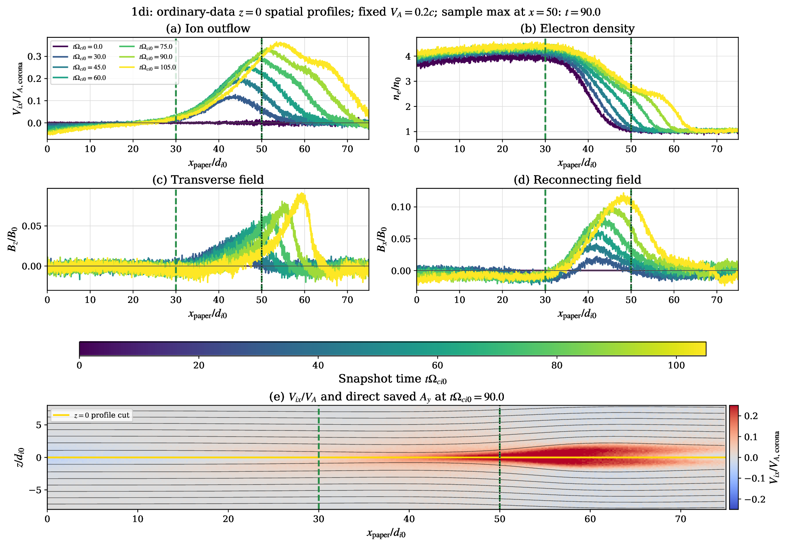
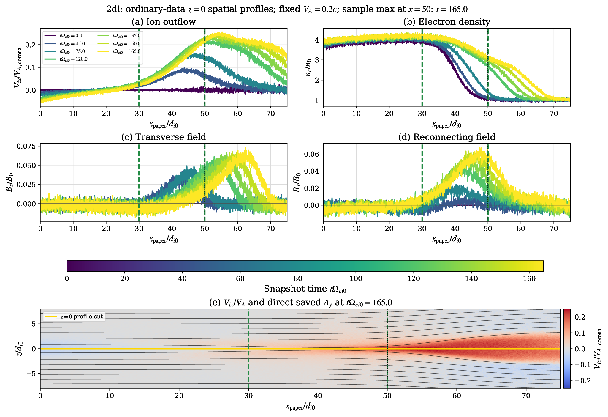
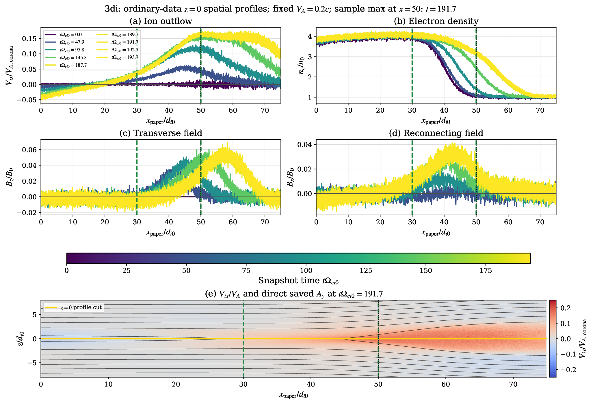
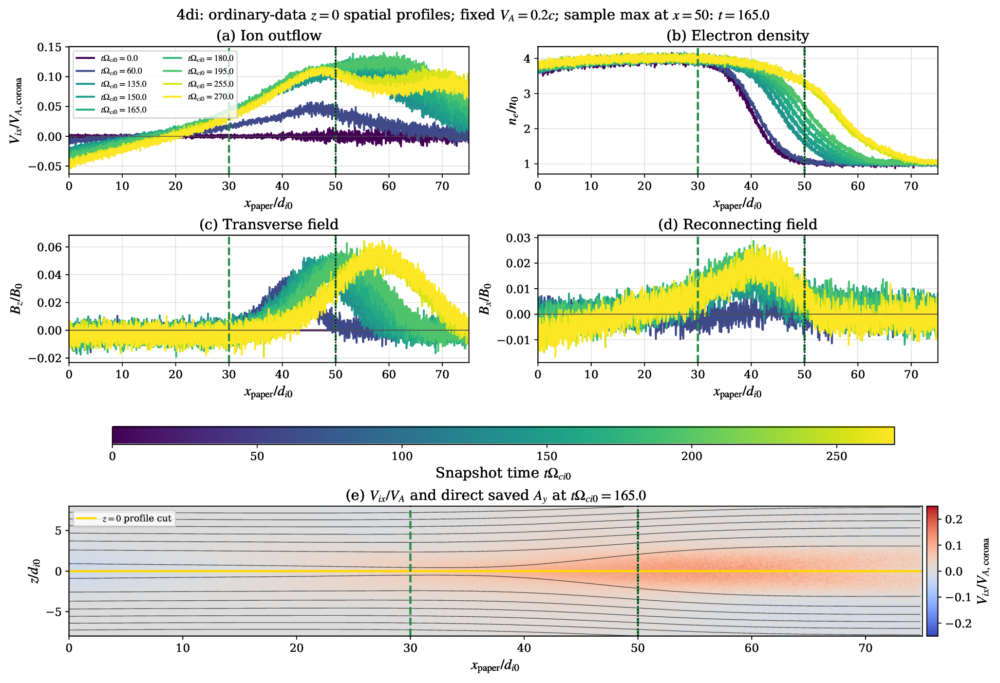
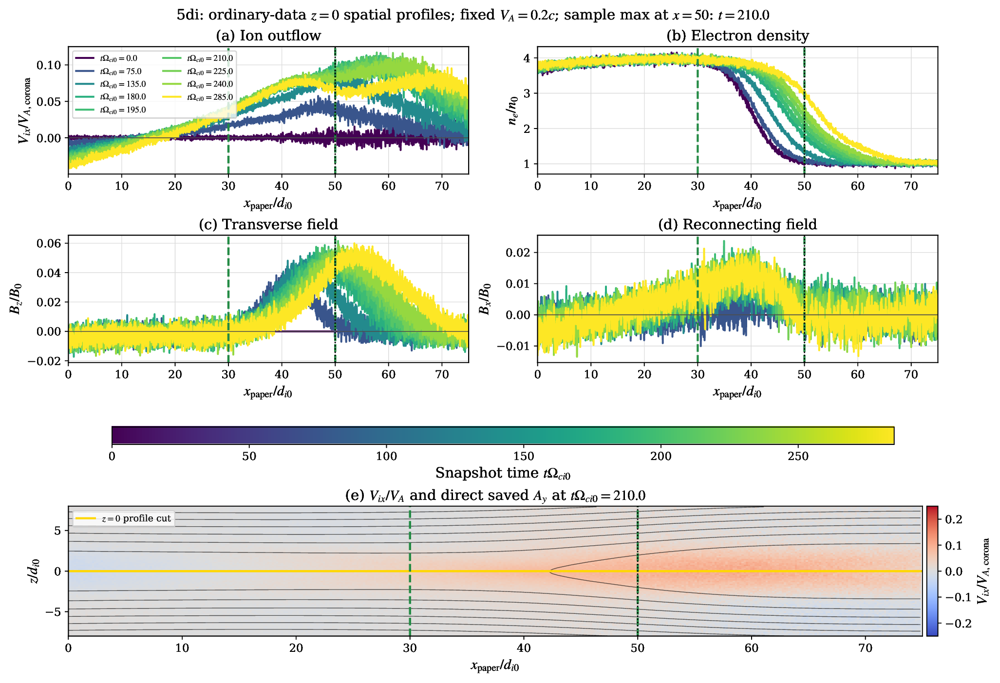
Ordinary VIX spatial evolution — late start
Ordinary snapshots from the late-start subset, with the same per-run spatial-profile layout.
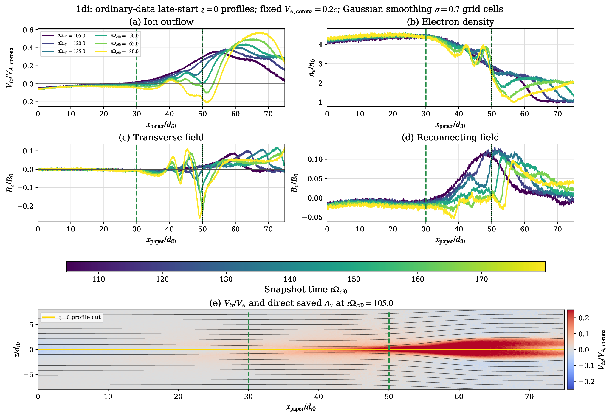
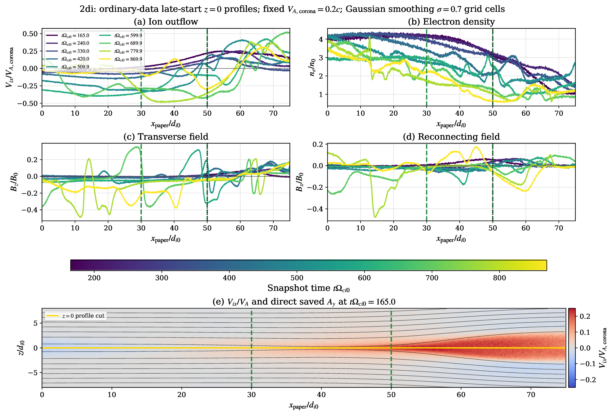
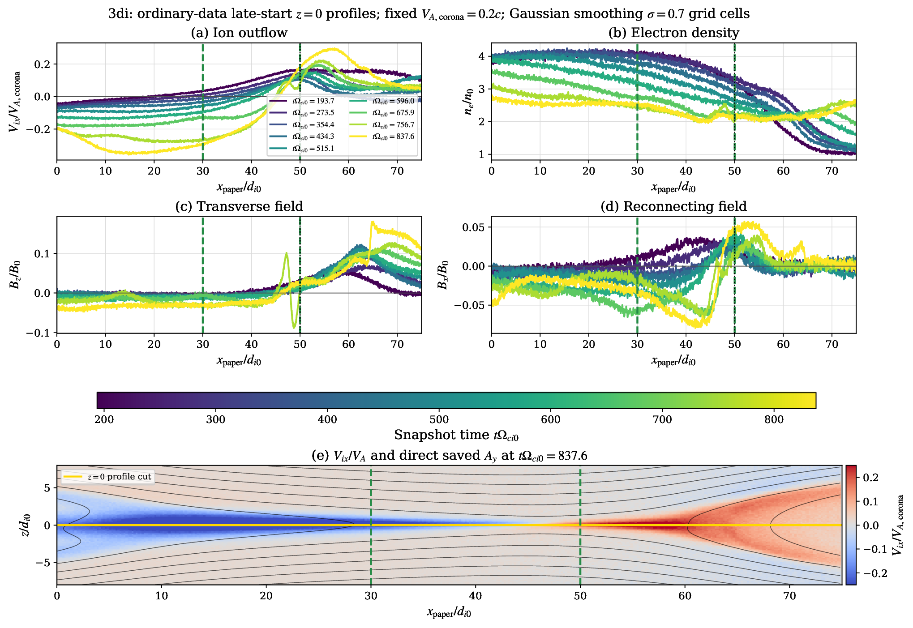
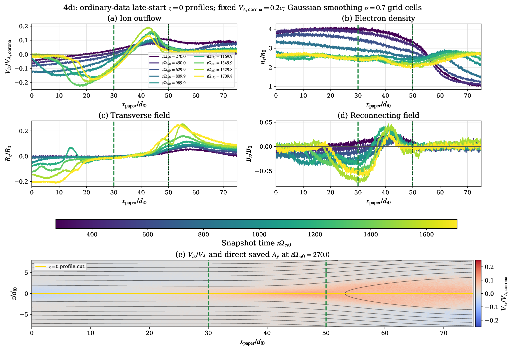
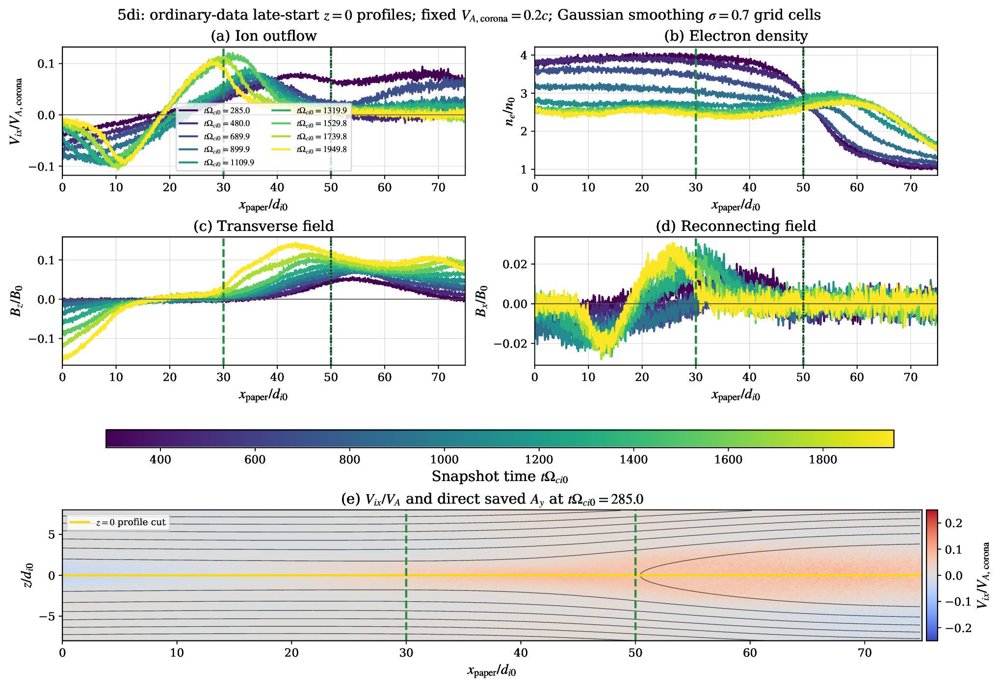
02 · EXTENDED ORDINARY MOVIES
Density, transverse field, and ion outflow
Controls support playback and scrubbing. Frames use the fixed coronal normalization and actual saved timestamps.
1di
tΩci0=0.0–180.0; 13 frames · ordinary VPIC outputs
Extended ordinary-data movie of ne, Bz/B0, and corrected Vix/VA in the right-gradient region.
2di
tΩci0=0.0–450.0; 31 frames · ordinary VPIC outputs
Extended ordinary-data movie of ne, Bz/B0, and corrected Vix/VA in the right-gradient region.
3di
tΩci0=0.0–499.2; 177 frames · 3di second-restart ordinary outputs
Extended ordinary-data movie of ne, Bz/B0, and corrected Vix/VA in the right-gradient region. Uses the designated second-restart trajectory.
4di
tΩci0=0.0–644.9; 44 frames · ordinary VPIC outputs
Extended ordinary-data movie of ne, Bz/B0, and corrected Vix/VA in the right-gradient region.
5di
tΩci0=0.0–689.9; 47 frames · ordinary VPIC outputs
Extended ordinary-data movie of ne, Bz/B0, and corrected Vix/VA in the right-gradient region.
Movie convention: Vix = jix/ρi, normalized by fixed VA,cor = 0.2c = 1.0 di0Ωci0. Color limits are the existing fixed limits; recorded frames show no clipped pixels. 3di uses the designated second-restart dataset.
03 · CONTEXT
All-family outflow comparison
Reference figure for threshold and outflow behavior across simulation families.
All-family outflow threshold comparison
Reference comparison across simulation families; see the source PDF for its full definitions and assumptions.
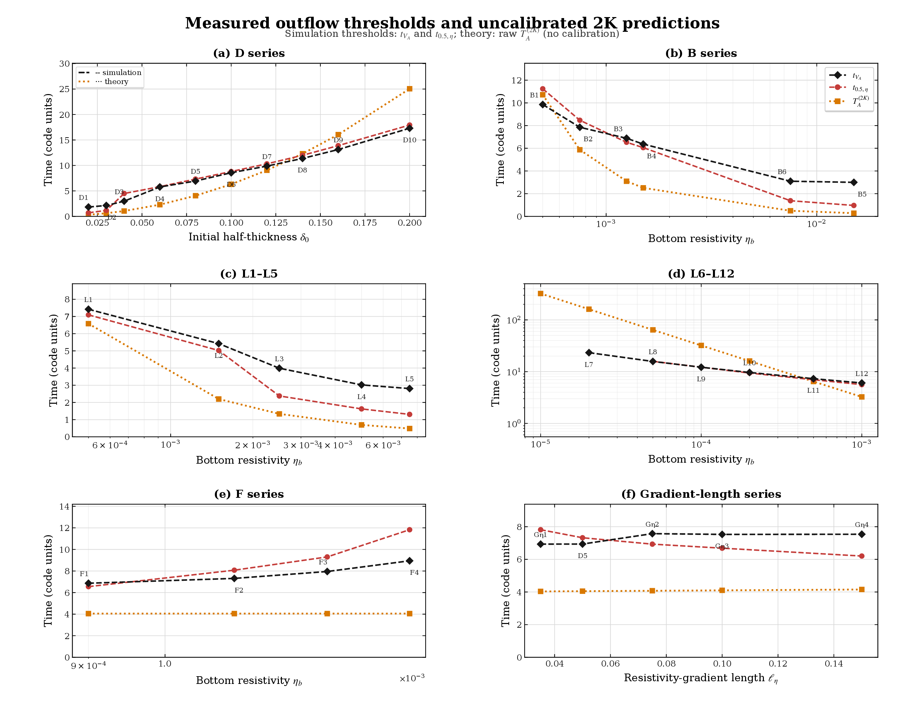
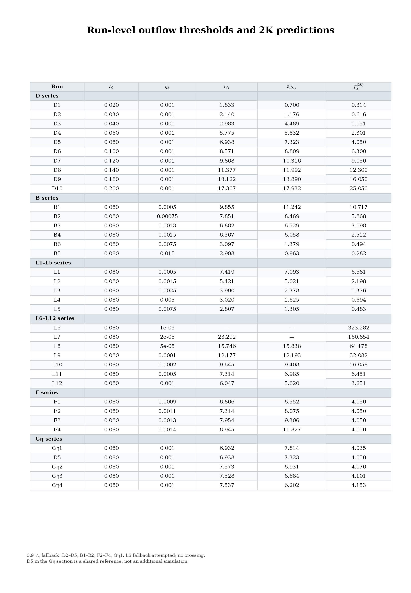
04 · FINAL VPIC COMPARISON
2K theory, q=0.5 data status, and thinning
Existing quantities only; the q=0.5 observations are censored rather than plotted as invented event times.
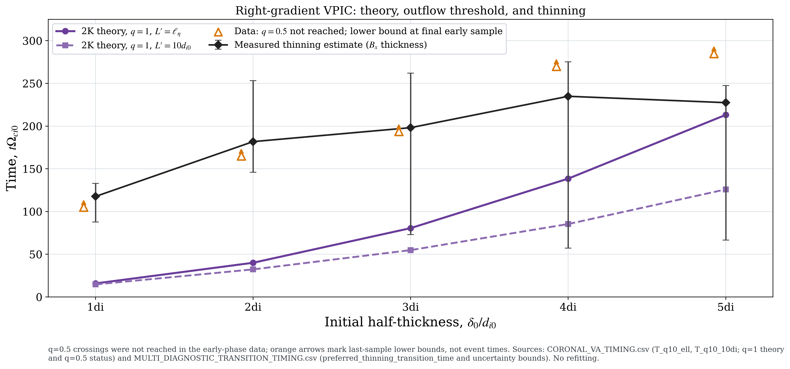
Figure provenance
Theory: CORONAL_VA_TIMING.csv, columns T_q10_ell and T_q10_10di; these are the existing q=1 2K crossings for the two uncalibrated transport-length choices.
Outflow status: same source CSV, columns measured_t05_eta_Omci_inv, t05_status, last_valid_early_time_Omci_inv, and positive_Ueta_max_over_VA. The crossing field is empty for all five runs; the max normalized local outflows remain below 0.5.
Thinning: MULTI_DIAGNOSTIC_TRANSITION_TIMING.csv, run-summary columns preferred_thinning_transition_time, preferred_thinning_window_lo, and preferred_thinning_window_hi. The estimate comes from fit-accepted regional Bx tanh half-width evolution; windows reflect method and spatial spread.
| Run | δ₀/dᵢ₀ | 2K q=1, L′=ℓη | 2K q=1, L′=10dᵢ₀ | q=0.5 data | Thinning estimate [window] |
|---|---|---|---|---|---|
| 1di | 1 | 15.8 | 14.6 | NR by 105.0 | 117.6 [87.7, 133.0] |
| 2di | 2 | 40.0 | 32.2 | NR by 165.0 | 181.8 [146.0, 253.1] |
| 3di | 3 | 80.5 | 54.8 | NR by 193.7 | 198.1 [72.9, 261.9] |
| 4di | 4 | 138.5 | 85.3 | NR by 270.0 | 234.9 [57.1, 275.2] |
| 5di | 5 | 213.1 | 125.9 | NR by 285.0 | 227.4 [66.5, 247.4] |
Interpretation: the q=1 model curves, q=0.5 observational threshold, and fast-to-slow thinning event are different observables. No q=0.5 crossing is measured in the cited early-phase timing source, and proximity between model and thinning times would not establish a shared mechanism.